Ronald Lethcoe
Curriculum and Instructional Design Specialist
Transforming Learning Through Innovative and Inclusive Design
Technology in education keeps changing, and I change with it. For more than 15 years I have looked for the tools and methods that work best and work for everyone, then built them into courses, workshops, and training that faculty and students can use right away.
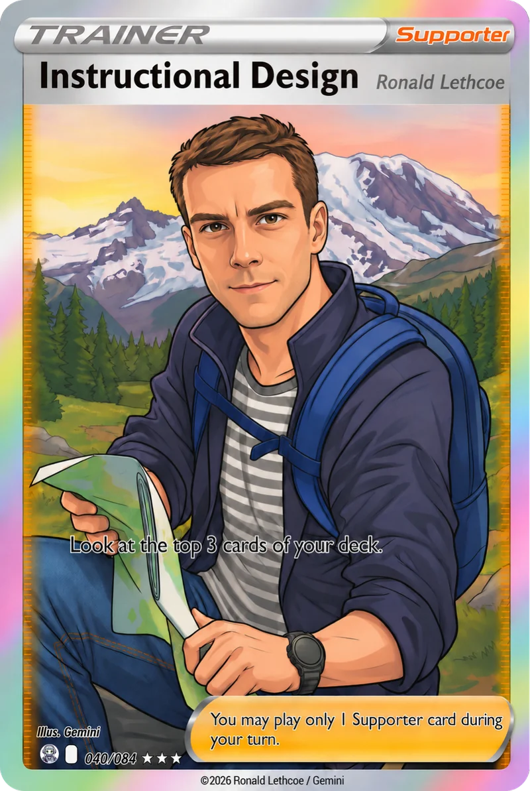
Faculty DevelopmentFour years of programs, from a gamified mountain climb to communities of practice
November 2026 to May 2027CARES Communities of Practice In Progress

Faculty needed a way to connect their professional development with the college’s CARES goals and continue working together after in-service. I designed the structure and Canvas space for five yearlong faculty communities.
I connected the five HOME rooms and the Fall In-Service planning activity to five groups, each with two faculty leads. I built one Canvas course with five sections and a November-to-May work cycle. The Canvas course is live, with five sections and participants in place. The communities are beginning their yearlong work, with portfolio assembly planned for May 2027.
Explore the Communities of PracticeOctober 16, 2026Fall 2026 In-Service: from Goals to Group Plans
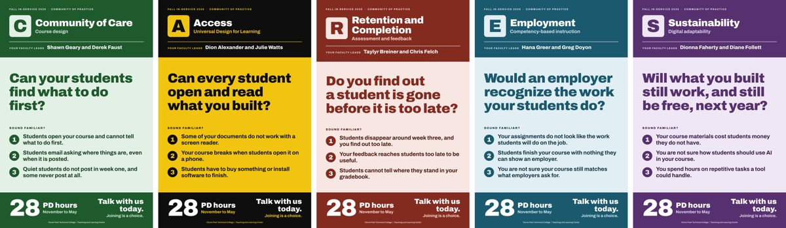
The college needed an in-service that connected faculty development plans to its CARES goals. I coordinated presenters and logistics and designed the afternoon learning experience.
I organized a sequence in which faculty analyzed a real program problem, planned a solution with colleagues, and shared their work in a gallery walk. I connected those group plans to the Communities of Practice. The group plans became starting work for the yearlong Communities of Practice. The event gave faculty a concrete handoff from an individual development plan to a shared project.
Open the LibGuide Page ↗Summer to October 2026HOME
My earlier self-paced faculty pathways showed me that people needed a reason to meet and keep going together. I rebuilt that shared foundation as HOME, a ten-week live course connected to later community work.
I organized each week as a room of a house, sequenced meetings around Gagné’s nine events, and used HOME Inspections for faculty self-assessment. The later rooms introduced the five CARES communities, and week ten supported the choice of a group. The course completed its ten-week run on October 12, 2026 and became the first 20 hours of the pathway into Communities of Practice. Faculty left with HOME Inspection self-assessments to carry into their portfolios.
Open the HOME Course in Canvas ↗May 2026Spring 2026 In-Service: the Bloom Block
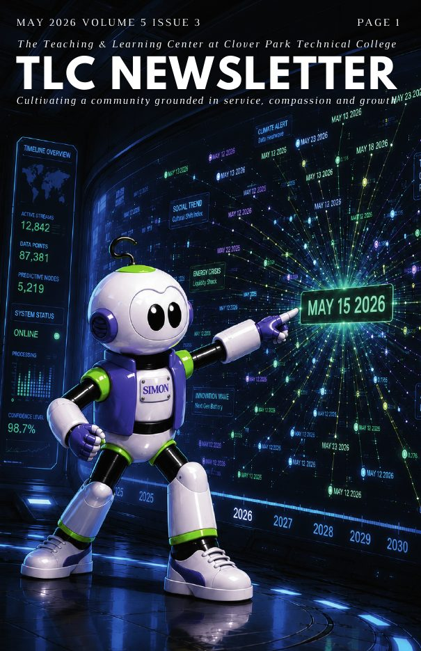
Faculty needed to translate the Critical Thinking College-Wide Learning Outcome into assignments students actually complete. I designed the Spring 2026 In-Service as the Bloom Block: eight departments working in parallel through six stages from Remember to Create. Simon’s story, introduced through a 16-page graphic novel in the TLC newsletter, gave the day a shared purpose. Each faculty member worked toward a concrete deliverable: a redesigned assignment with visible CWLO alignment.
I built the dean and faculty guides, six stage handouts, a Simon Ticket voting economy, and an AI CWLO checker. Faculty compared the checker’s suggestions with their own work and made the final revisions themselves. The event produced 113 CWLO-aligned redesigns from 129 submitted assignments, an 88% completion rate. Assignments naming a critical-thinking term rose from 10% to 42%, and 84% of 75 survey respondents rated the day good or excellent.
Open the LibGuide Page ↗2025 to 2026Applied AI
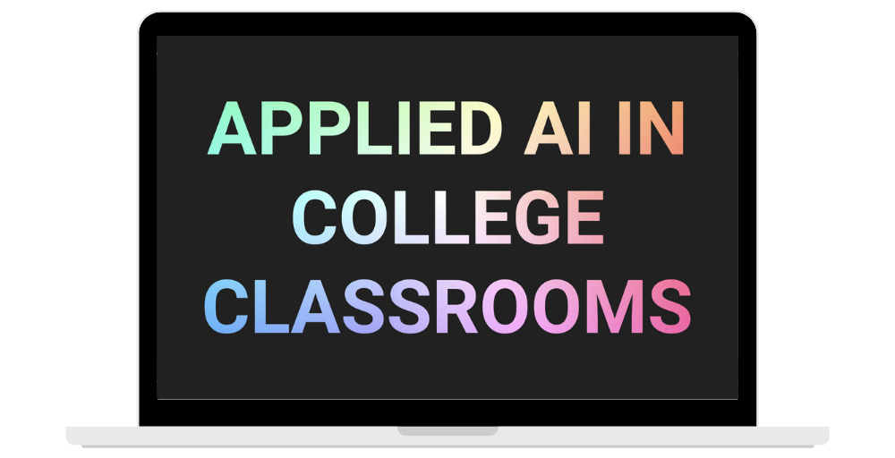
Faculty who had completed an introduction to generative AI needed a more advanced next step. I built Applied AI as the continuation of that faculty learning pathway.
I developed the course and launched it in fall 2025, connecting it to the earlier Generative AI in Higher Education course and the college’s broader AI work. Applied AI launched in fall 2025 and established an advanced next step in the faculty learning pathway. Course-specific completion and learning results are not yet documented in this case study.
Open Applied AI in Canvas ↗October 2025In+Out Day 2025: Professional Responsibility
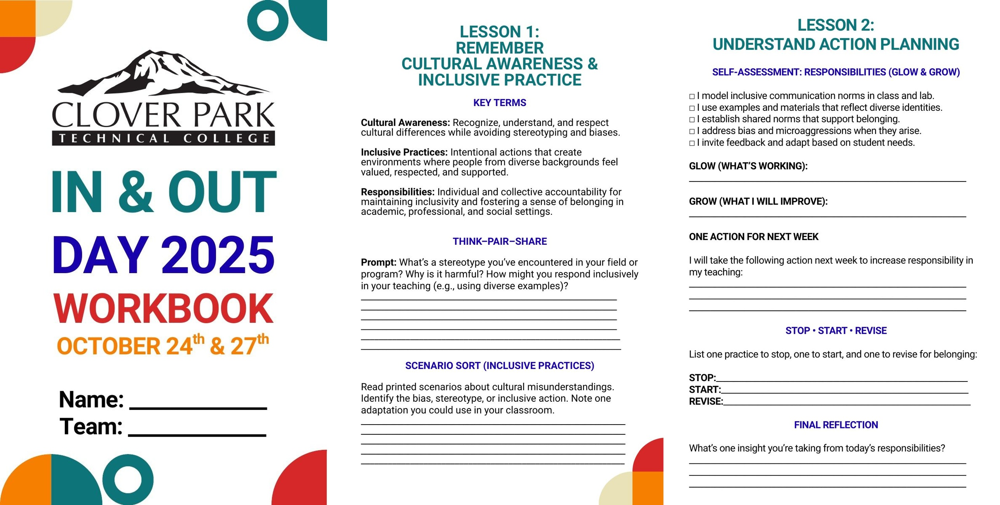
The college was connecting faculty professional learning with its Professional Responsibility CWLO and program assessment work. My event work supported a two-day experience with the Office of Outcomes and Assessment.
The program moved through the outcome’s levels, from cultural awareness and inclusive practice to sustainability, culturally informed soft skills, and belonging. Faculty also updated their program learning outcome reports. The event connected professional learning and program reporting in the same two-day experience.
Open the LibGuide Page ↗May 2025Spring 2025 In-Service
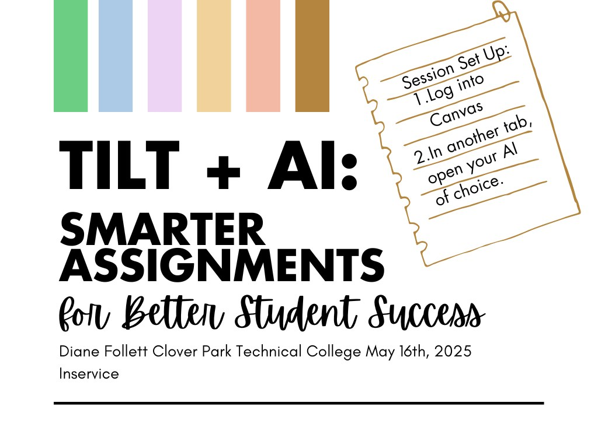
The in-service brought together practical faculty topics, including belonging, access, technology, and student support. I contributed a session on using TILT and AI to improve assignment design.
I led “TILT + AI: Smarter Assignments for Better Student Success” within a ten-session faculty program and published its resources in the TLC LibGuide. The session was delivered, and faculty can still access its assignment-design resources in the TLC LibGuide.
TILT + AI Session PageOpen the LibGuide Page ↗October 2024In+Out Day 2024: CARES Rotations
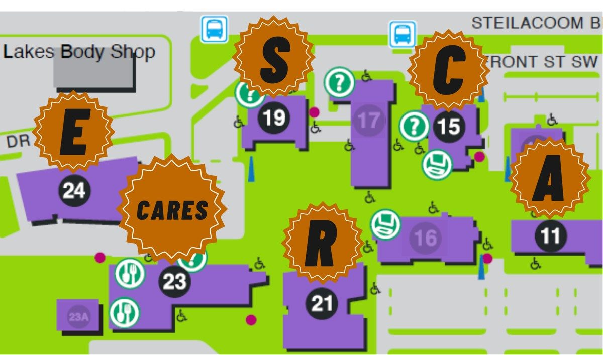
The college needed to connect faculty work with the five CARES areas of its strategic plan. My in-service work helped turn that framework into a two-day faculty experience.
The event used rotations through CARES-themed sessions and connected those sessions to program action-plan updates. That same organizing framework later carried into HOME and the Communities of Practice. The event established the CARES-based structure used in later faculty development. The recorded result is the event and its connection to program planning, rather than a measured change in institutional performance.
Open the LibGuide Page ↗2024 to 2026Framework for Faculty and Student Success (FFSS)
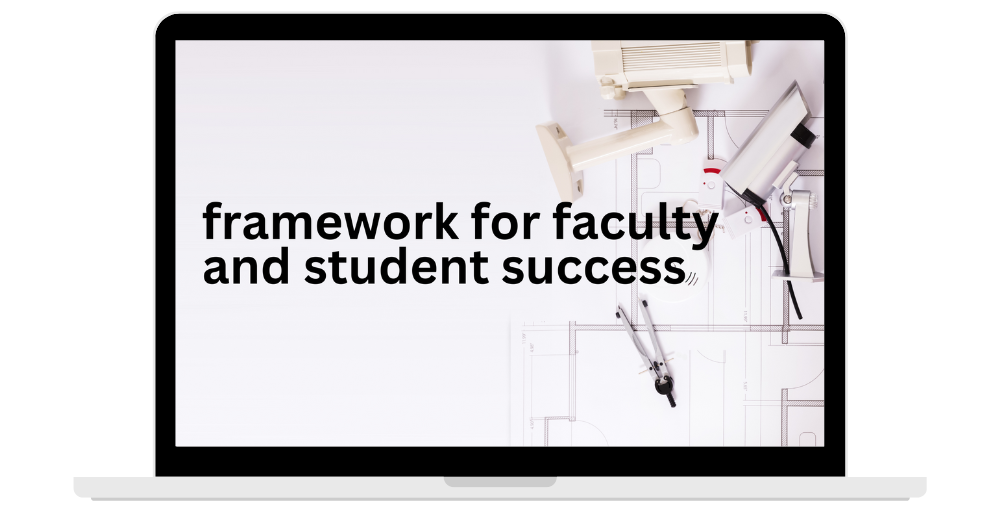
The original Jisan pathways needed revision as I learned more about how faculty participated in professional development. I rebuilt the yearly framework around course-design expectations and what the previous version taught us.
I aligned the framework with the Washington State Course Design Checklist and revised it each year as part of the college’s faculty learning system. More than 500 PD hours were earned through the framework. The project also gave me a structure I could revise each year as faculty needs and course-design expectations changed.
Open FFSS in Canvas ↗2024Generative AI in Higher Education
Faculty needed a foundation for making decisions about generative AI in their teaching. I built a 30-hour faculty cohort that connected AI guidance with actual course materials.
The course asked faculty to apply the guidance to their syllabi, assignments, assessments, and learning materials. It became the foundation for the later Applied AI course. The first cohort finished, with course work focused on faculty syllabi, assignments, assessments, and learning materials. That course became the foundation for the later Applied AI pathway.
Open Generative AI in Canvas ↗Open the Generative AI Resources ↗May 2024Spring 2024 In-Service: Faculty Teaching Faculty
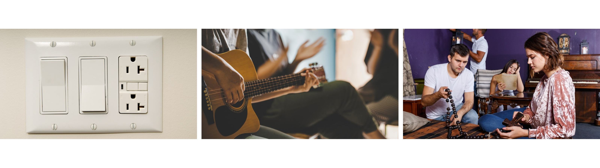
The college had practical expertise across programs that faculty could share with one another. My in-service work helped organize a day around that faculty expertise.
The day opened with Simon Says: Break the Ice and moved into hands-on workshops led by faculty, including wiring, songwriting, and virtual escape rooms. The event gave faculty a structured opportunity to teach and learn from colleagues across disciplines. The program and workshop resources are the documented outputs; no event-specific learning measure is recorded.
Open the LibGuide Page ↗2023 to 2024Jisan Paths and PD Base Camp
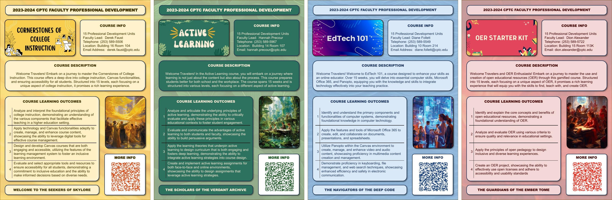
I wanted to give faculty a shared foundation and a clear route through professional learning at CPTC. I designed PD Base Camp and four themed paths up Jisan Mountain.
I built stories, challenges, simulations, and badges around the tracks. When few faculty finished independently and time emerged as a barrier, I folded three tracks together and added Lunchtime Learning to walk teams through their next level. The initial design exposed an accountability problem that changed my approach. Those lessons directly informed HOME’s shared foundation and weekly live meetings. This is an example of using weak completion as design evidence.
Open the LibGuide Page ↗Open the Jisan Graphic SyllabiMay 2023Spring 2023 In-Service
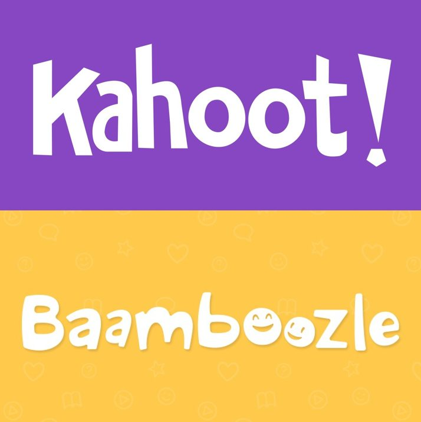
I joined CPTC in January 2023 and contributed to my first in-service four months later. I co-presented an afternoon session with Geoff Cain.
That early work began the approach I continued developing: use a playful opening to draw people in, then connect the experience to work faculty can take back to their courses. The session was delivered and became an early step in my longer faculty-development work at CPTC. It was also an opportunity to begin working with colleagues across the college.
Outcome Alignment Underneath It All
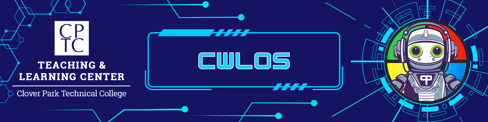
I co-developed CPTC’s College-Wide Learning Outcomes and built four faculty toolkits with leveled criteria, self-checks, and video walkthroughs.
Explore the CWLO LibGuide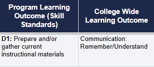
Every faculty course I build is aligned to the CWLOs and to the Washington Skill Standards for Professional Technical Faculty, so the training models the alignment it teaches.
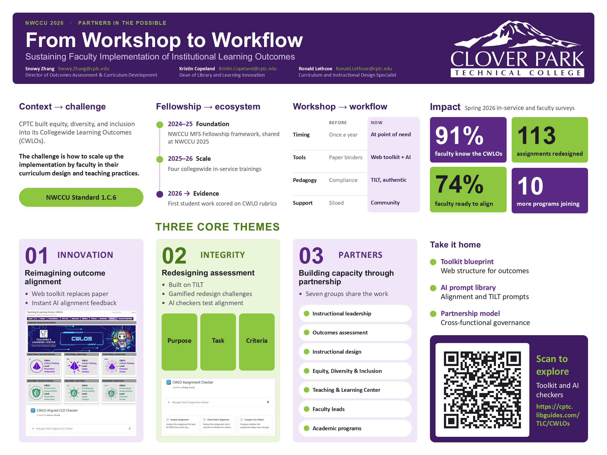
I will present the CWLO in-service model as a poster at NWCCU on December 1, 2026.
The Systems I Run
I administer Canvas for the college, including Blueprints, Credentials and course builds.
I lead the college's adoption of Simple Syllabus.
I manage H5P for the college and teach faculty to build interactive content with it.
381 badges, 4,418 awards, 15 pathways and 110 certificates in place of manual PD tracking.
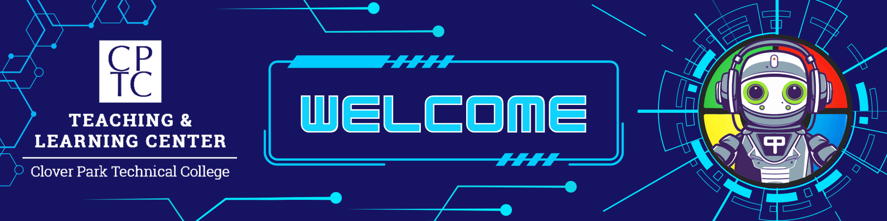
When I joined CPTC, faculty needed and wanted one reliable place to find teaching and professional learning resources. I took the initiative to design and build the TLC LibGuide from scratch, including its homepage, and organized it around the information faculty were looking for.
I maintain and update the guide as a repository of information for faculty. Courses, event materials, College-Wide Learning Outcome toolkits, recordings, and practical teaching guidance come together in one place so faculty can find what they need and return to it as their work develops.
Visit the TLC LibGuideAI in EducationHow I helped take CPTC from one ChatGPT workshop to a college-wide AI strategy
I chair the task force, designed the college's strategic plan on AI, and co-authored its AI guidance, including the green, yellow and red labels faculty use for AI expectations.
As former co-chair of the eLearning Council AI Task Force, I co-led the creation of AI Essentials for Washington's 34 community and technical colleges.
Generative AI in Higher Education (30 hours), Applied AI (42 hours), AI Essentials (5 hours, co-developed) and LEARN AI, a six-course program now in redesign.
Fall 2026Pilots and Statewide Guidance In Progress
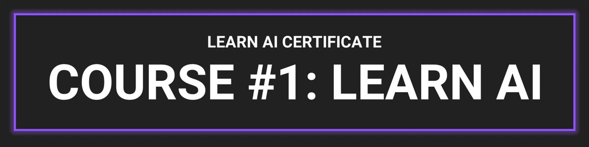
My current AI work connects student support, institutional guidance, and professional learning. I lead CPTC’s Microsoft Elevate work with Slalom on a pathways agent for Transitional Studies students, lead the eLearning Council task force’s General AI Recommendations for the Instruction Commission, and am redesigning LEARN AI’s six-course program for students, staff, and the community.
I design these projects around real workflows and human judgment. The pathways pilot keeps staff responsible for recommendations, while the statewide guide supports colleges making their own policy decisions. I also co-presented “Build it with us: AI workflows for nursing leaders” with Kristin Copeland at CNEWS in October 2026, with a practice scenario, prompts, and four reusable workflow builds. The workshop resources are available, while the agent pilot, recommendations, and LEARN AI redesign remain in progress.
Summer 2026AI+OER Institute and Beyond the Bot
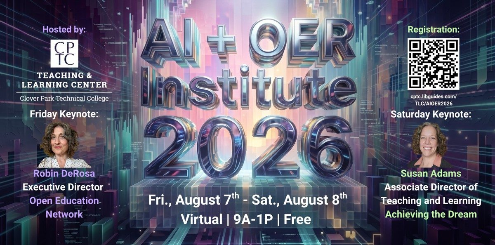
Educators needed opportunities to examine AI and open education together and keep human learning central. As Event Lead for the 2026 AI+OER Institute, I helped coordinate a virtual program of 14 sessions and 17 presenters and wrote its impact report. This continued my annual institute work, beginning with the 2023 OER Institute, followed by the 2024 AI Institute and the 2025 AI+OER Institute.
The 2026 institute drew 591 registrations from 368 institutions in 26 countries. I also co-developed an Eight Essential Principles framework with Joni Gutierrez and presented it with him in a joint keynote at Evergreen State College’s Beyond the Bot GenAI Summit. The institute resources, framework, and conference materials give educators ways to revisit the work and apply it in their own settings.
Beyond the Bot SummitOpen the LibGuide Page ↗Explore the 2026 AI+OER InstituteSpring 2026Turning Strategy into Action
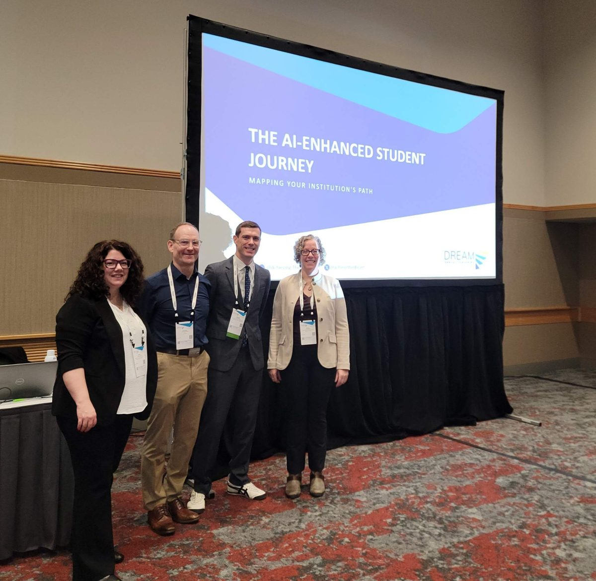
CPTC needed to connect its AI direction with concrete decisions, tools, and instructional practice. As task force chair, I contributed to work using Achieving the Dream’s AI-Enabled Community College framework.
The task force developed an implementation worksheet, risk framework, and draft data-use policy. In the instructional work, I built an AI CWLO checker that faculty used during the Bloom Block. The work produced planning tools and a checker used in the Bloom Block. The draft data-use policy is still moving through shared governance.
Open the LibGuide Page ↗Presentations
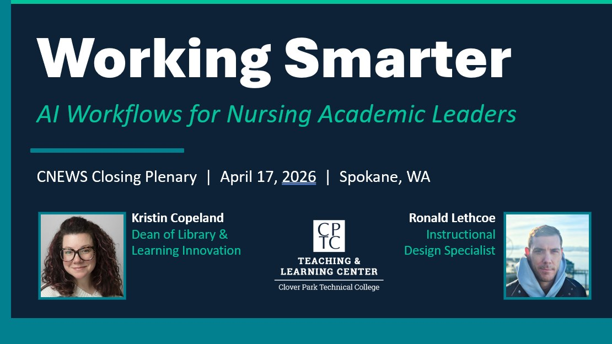
Working Smarter: AI Workflows for Nursing Academic LeadersRonald Lethcoe and Kristin CopelandCouncil on Nursing Education in Washington State · Spring 2026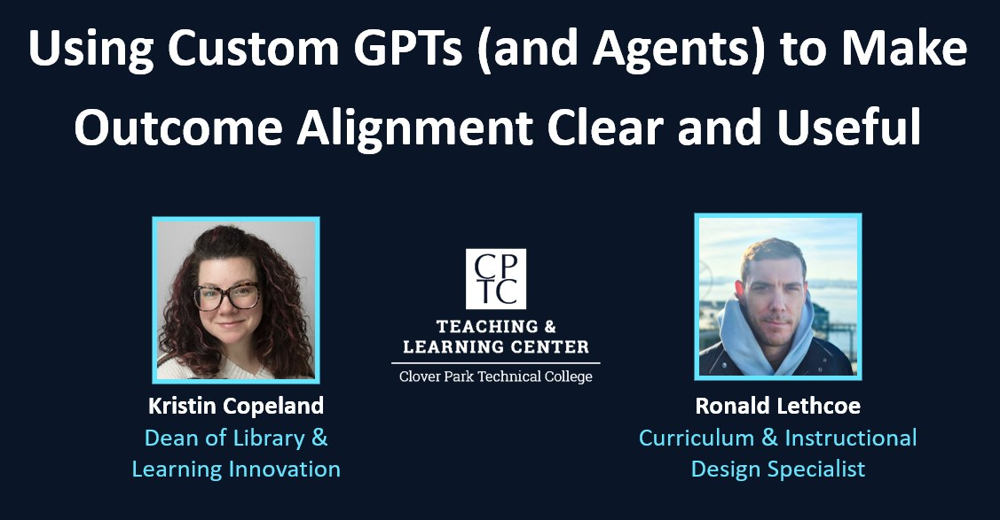
Using Custom GPTs (and Agents) to Make Outcome Alignment Clear and UsefulKristin Copeland and Ronald LethcoeAssessment, Teaching, and Learning + Washington’s Annual Canvas Conference · 20262025Making AI Practical and Growing Capacity
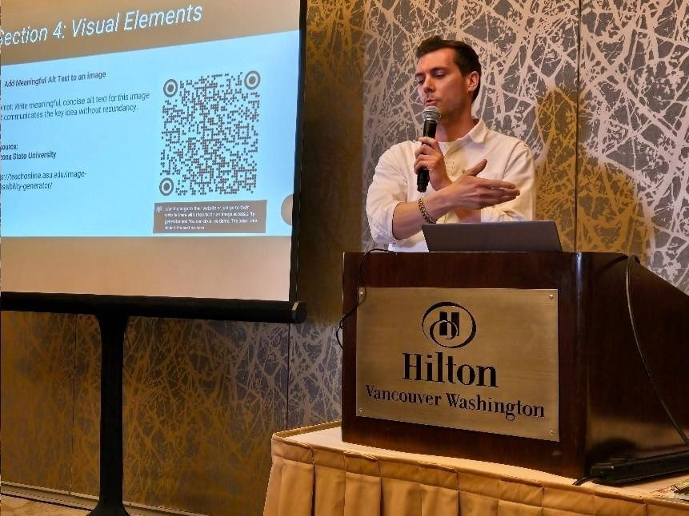
Faculty needed usable ways to communicate AI expectations and move into more advanced practice. My work connected institutional guidance, professional learning, and external sharing.
We shared syllabus language, a Student AI Guide, and green, yellow, and red decision tools. I launched Applied AI and presented on AI topics with colleagues. My annual institute work included the 2025 AI+OER Institute. The guidance tools were available, Applied AI launched, and the 2025 institute reported more than 400 participants. Together, those were concrete steps in making AI support available across the college.
Mitigating Bias in AIOpen the LibGuide Page ↗Explore the 2025 AI+OER InstitutePresentations
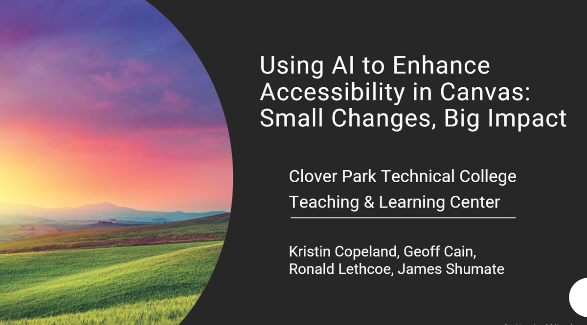
Using AI to Enhance Accessibility in Canvas: Small Changes, Big ImpactKristin Copeland, Geoff Cain, Ronald Lethcoe, and James ShumateAssessment, Teaching, and Learning Conference · 2025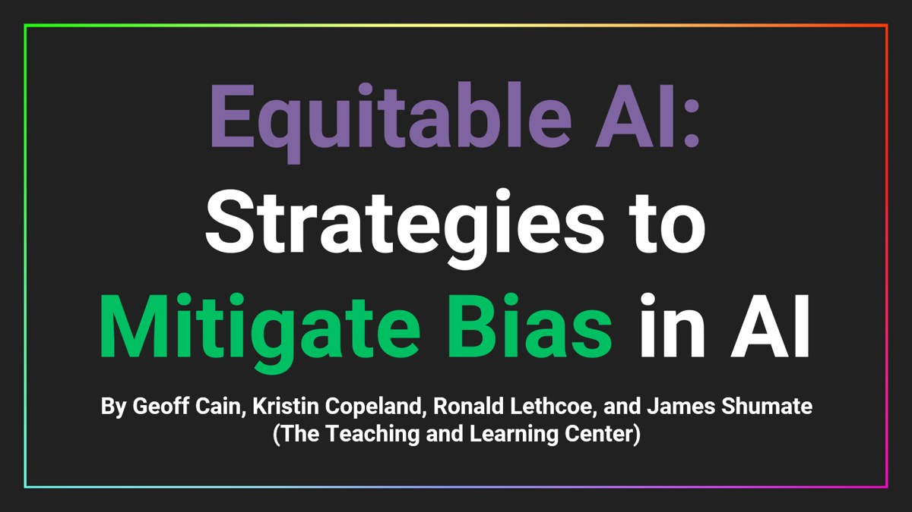
Equitable AI: Strategies for Educators to Mitigate Bias in Artificial IntelligenceKristin Copeland, Geoff Cain, and Ronald LethcoeNational Conference on Race and Ethnicity in Higher Education · 20252024Policy and a Faculty Foundation
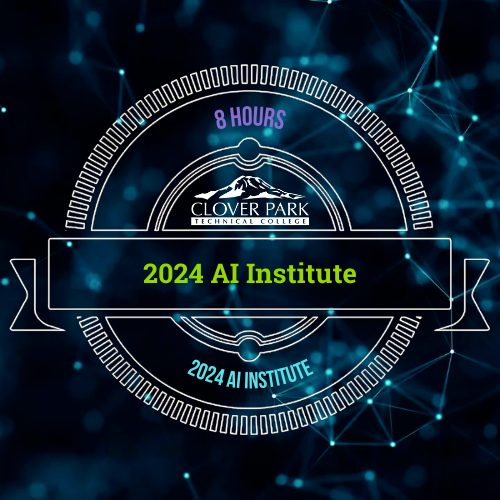
The college needed a shared foundation for instructors making decisions about generative AI. I helped connect institutional guidance with faculty learning and statewide course development.
The work included AI syllabus language and assignment tags, the first 30-hour faculty cohort, and AI Essentials. The college adopted Policy 4.19, allowing instructors to permit, restrict, or prohibit AI in their courses. My annual institute work included the 2024 AI Institute. Policy 4.19 was adopted, the first faculty cohort finished, and the AI Institute reported more than 300 participants worldwide. My contribution connected the guidance, course development, and professional learning.
Explore the 2024 AI InstitutePresentations
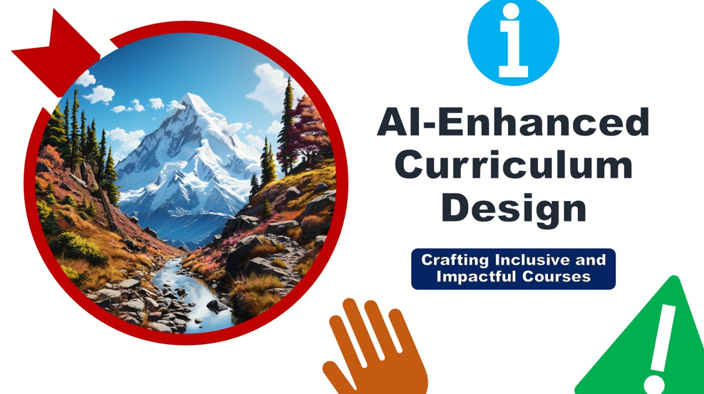
AI-Enhanced Curriculum Design: Crafting Inclusive and Impactful CoursesRonald LethcoeClover Park Technical College webinar · January 2024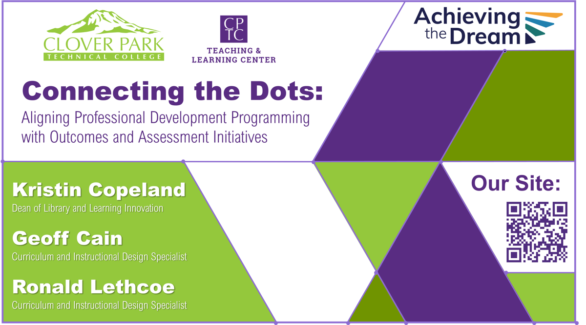
Connecting the Dots: Aligning Professional Development Programming with Outcomes and Assessment InitiativesKristin Copeland, Geoff Cain, and Ronald LethcoeAchieving the Dream · 2024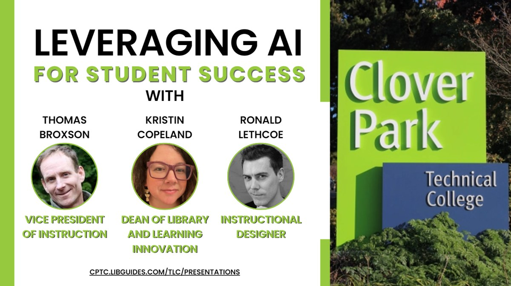
Leveraging AI for Student SuccessThomas Broxson, Kristin Copeland, and Ronald LethcoeAchieving the Dream webinar · 2024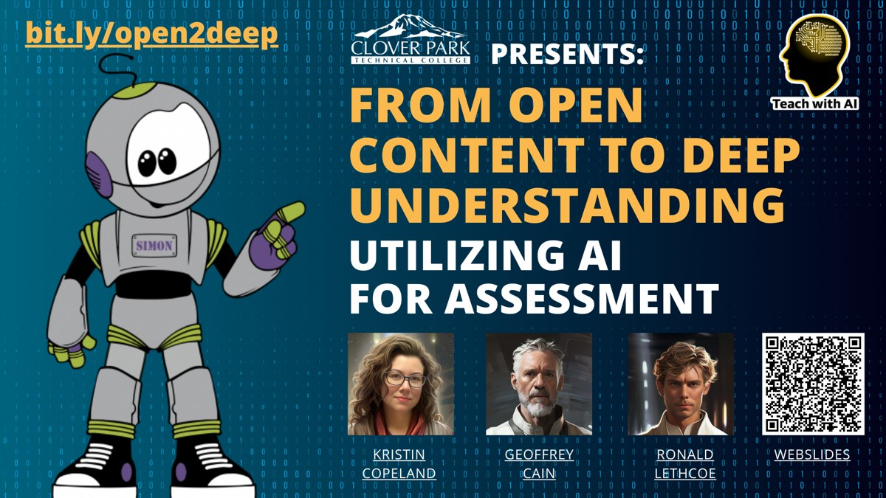
From Open Content to Deep Understanding: Utilizing AI for AssessmentKristin Copeland, Geoff Cain, and Ronald LethcoeTeaching and Learning with AI Conference · 2024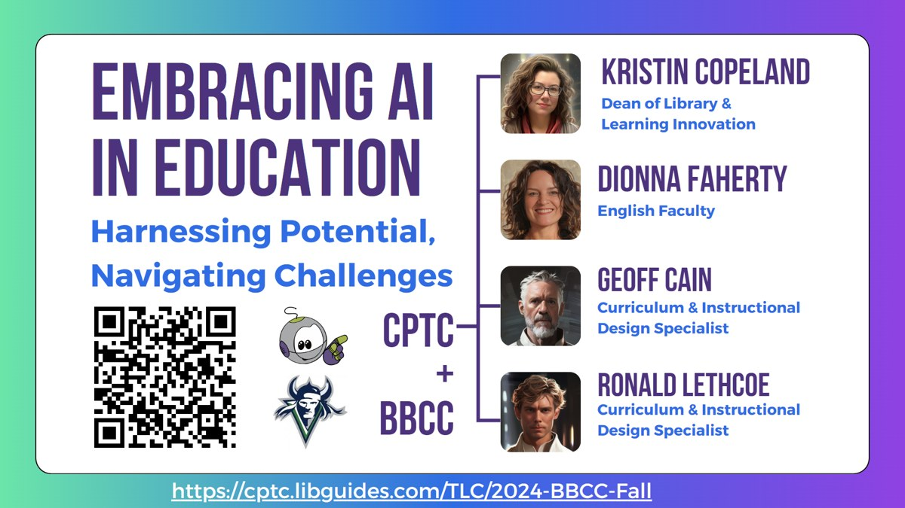
Embracing AI in Education: Harnessing Potential, Navigating ChallengesRonald LethcoeBig Bend Community College Fall In-Service · September 2024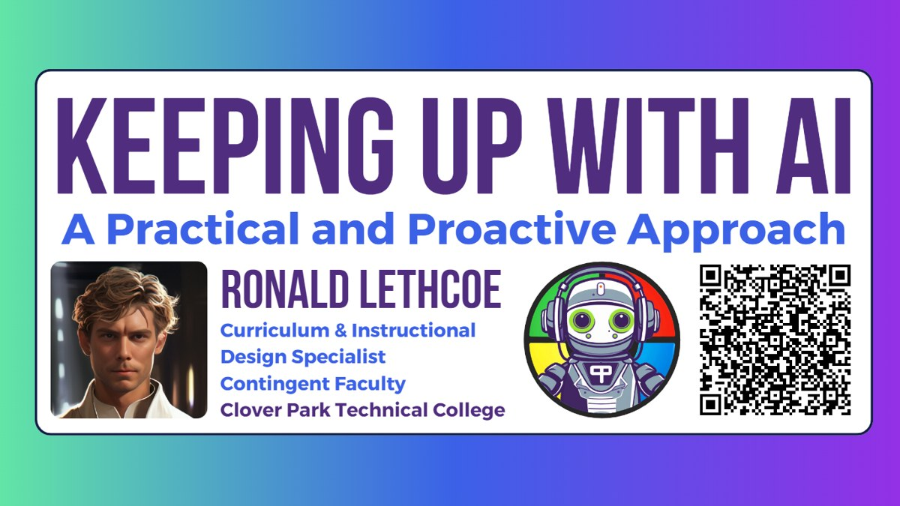
Keeping Up with AI: a Practical and Proactive ApproachRonald LethcoeAmerican Federation of Teachers conference · November 20242023Where It Started
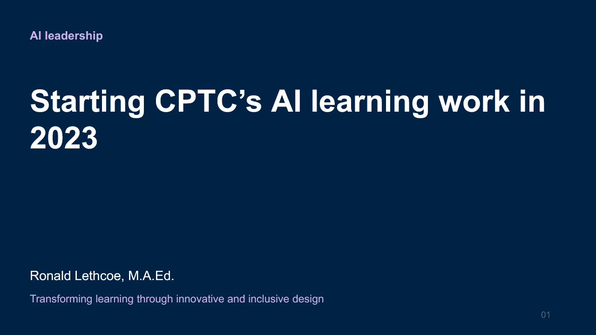
I joined CPTC as generative AI was becoming an immediate teaching issue. I began creating opportunities for faculty to examine it and brought ideas into institutional discussion.
I offered ChatGPT in Higher Education in February 2023 and two AI in the Classroom workshops. I also brought ideas back from conferences as the college formed its AI Task Force and began policy work. My annual institute work included the 2023 OER Institute. The early workshops and task force work established a foundation for the guidance and courses that followed. I was able to connect immediate faculty questions with longer-term institutional work.
Open the LibGuide Page ↗Explore the 2023 OER InstitutePresentations
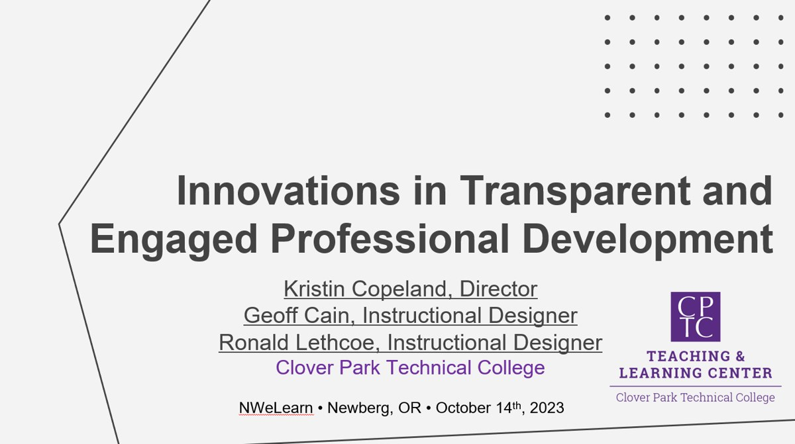
Innovations in Transparent and Engaged Professional DevelopmentKristin Copeland, Geoff Cain, and Ronald LethcoeNorthwest eLearning Conference · October 2023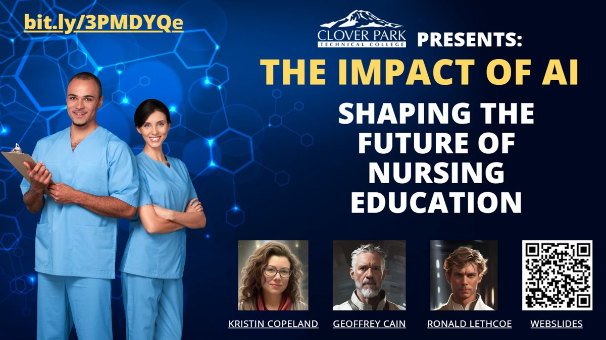
The Impact of AI: Shaping the Future of Nursing EducationKristin Copeland, Geoff Cain, and Ronald LethcoeWashington nursing deans keynote · November 2023Workforce TrainingRegulated, technical, and statewide training I built for organizations outside the classroom
I have run an independent instructional design practice since 2016. Partners bring me compliance, workforce and statewide training needs, and I turn their requirements into courses people finish and use.
2026 to presentKorean Women's Association: Home Care Academy
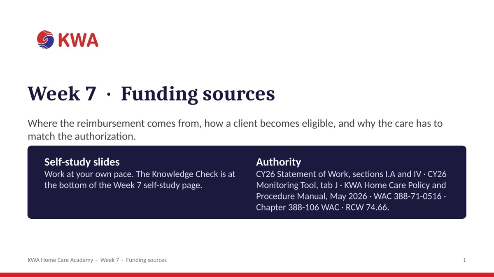
Home care supervisors and employment coordinators needed compliance learning that reflected their actual work and a multilingual, unionized workforce. I served as lead instructional designer through CPTC Corporate Education.
I mapped a 128-hour curriculum to Washington statutes and DSHS rules and paired short Canvas learning with a live application hour. After the first evaluation, I rebuilt later weeks around one mock-file activity per hour, separated coordinator content, and created cohort-specific knowledge checks. In the October 2026 evaluation, 88% of supervisors said they would recommend the course. There were 42 respondents overall. Feedback also led to specific changes in the activities, role-specific content, and knowledge checks.
2025 to 2026Tacoma Manufacturing Incubator
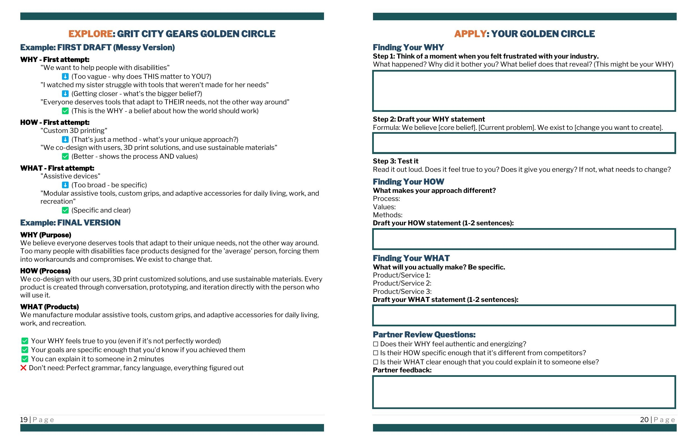
The Tacoma-Pierce County Chamber needed a coordinated curriculum and participant resources for a manufacturing incubator. I managed the 12-week program’s curriculum work and coordinated seven industry subject matter experts.
I brought the expert contributions into a session curriculum, slide system, and participant manual. In fall 2026, I am also coordinating delivery through CPTC Corporate Education. The program has a shared curriculum and participant manual, with contributions coordinated across seven experts. Fall 2026 delivery coordination is underway.
Open Two Pages from the TMI Manual2024Washington State Board for Community and Technical Colleges: AI Essentials
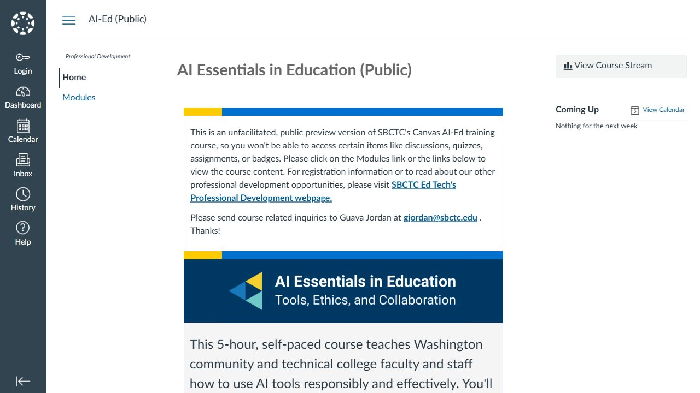
Washington’s community and technical colleges needed an introductory AI course for faculty and staff. I co-developed AI Essentials as part of the statewide collaboration.
I worked with colleagues on a five-hour course that could serve faculty and staff across the state’s 34 community and technical colleges. AI Essentials launched statewide in 2024 as a five-hour introduction available to faculty and staff across all 34 colleges. Statewide availability is the result documented here; completion across every college is a separate measure.
Open AI Essentials at SBCTCOctober to December 2017M&T Bank
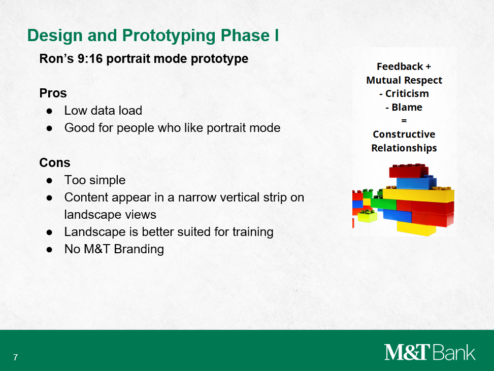
M&T Bank was preparing for mobile learning as its LMS and authoring environment changed. I worked with three colleagues to research options, create templates, and present a recommendation.
We recommended Rise for responsiveness, then adapted when the client chose Storyline 3. I prototyped a simple phone-oriented design, and our team developed the training example, exported a SCORM package, and also supplied a compatible Rise project. We delivered the templates and a high-fidelity course example. We did not receive post-delivery effectiveness data. The experience taught me to adapt to client platform decisions and arrange evaluation access earlier.
Read the Full M&T Bank Case StudyNovember 2017 to May 2018Girl Scouts
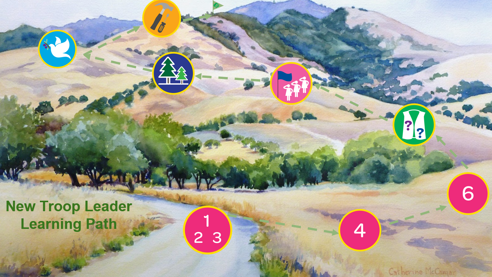
Girl Scouts volunteers faced a large training catalog, and many did not know what learning was available or what to take next. A fellow designer and I worked on the Litmos learning experience and motivation to continue training.
We surveyed volunteers, grouped related courses into skill trees, coordinated consistent icons, and built a visual learning path with badges and points. We implemented the materials in Litmos and created a step-by-step maintenance guide. We also prototyped an AR conflict-resolution example. We delivered the redesigned learning path and maintenance guide. The client’s rollout timing prevented us from receiving effectiveness data, so the delivered system is the result I can substantiate.
Read the Full Girl Scouts Case StudyFebruary to April 2017Steele Canyon High School
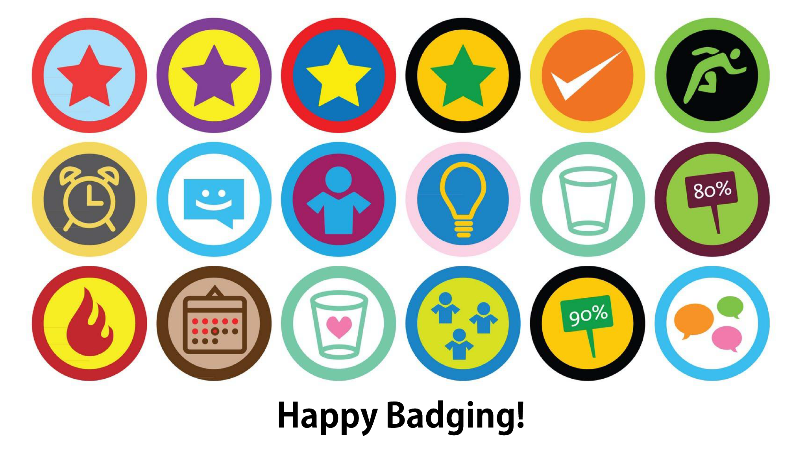
An AP Computer Science Principles teacher wanted to address students submitting online work late. A fellow designer and I were asked to design badge criteria and implement them in Canvas.
We surveyed students, designed badges, and tested available tools. When Canvabadges did not work and Badgr supported module completion rather than individual assignments, we changed the design to weekly module badges. We tested the award flow as enrolled students and prepared a teacher guide. The badge-award workflow worked in the pilot. The teacher reported improvement in on-time work, but we did not receive direct student feedback or a quantified outcome before the project ended.
Read the Full Steele Canyon High School Case StudyTeachingAdult ESL at CPTC, back through twelve years of teaching every level in South Korea
I design and teach at the same time, so nothing I recommend to faculty is untested.
2023 to presentClover Park Technical College
My teaching at CPTC connects instructional design with the needs I see in the classroom. I teach adult ESL and ABE, including a class at the Puyallup Library, teach Technology Fundamentals, and co-teach COLL 102 College Success. I design learning activities around material adults can discuss and use, with clear expectations at the point where they do the work.
For ESL, I start with a current news story and build vocabulary decks, Kahoot games, and classroom activities around the shared topic. In College Success, I use green, yellow, and red AI-use banners on assignments so students can see the expectation alongside the directions. These ongoing teaching routines let me connect course design with classroom practice.
Open the ESL2 Class Page ↗2016 to 2023, and still recordingSeoul Digital University
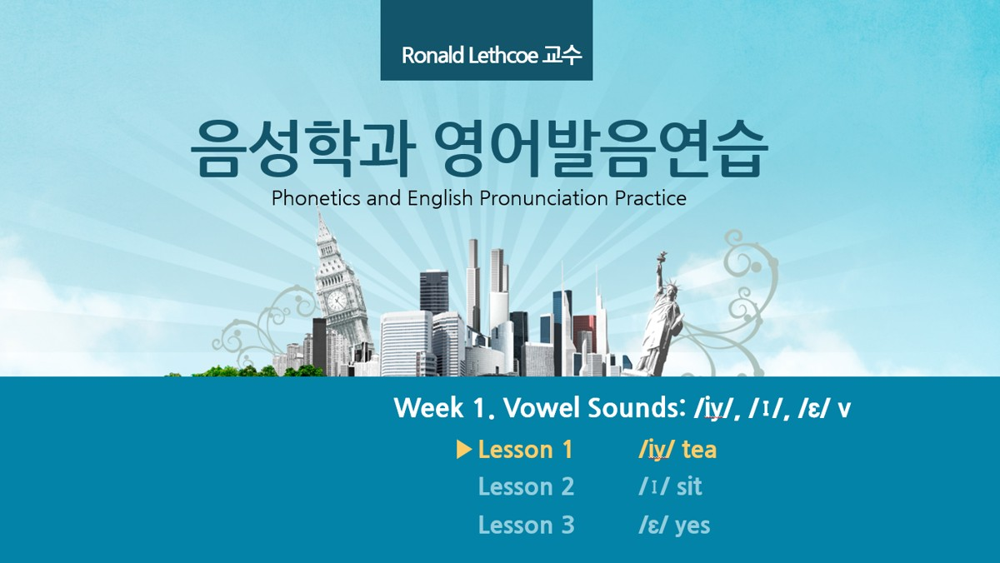
Adult English learners at SDU needed clear online instruction across classes ranging from 50 to 300 students. I designed and taught semester courses through the university’s custom LMS.
I consulted colleagues about learner levels, used Cambridge and Oxford texts as a curriculum basis, and developed more than 40 slide decks per course with 25-minute recorded lectures. I paired the videos with speaking assignments, quizzes, and exams, then revised assessments and later materials using student evaluations. My courses received the university’s Top 10 recognition four times. The work taught me how to turn a large body of content into a repeatable online course while using feedback to keep improving it.
South KoreaHanyang University Elementary School
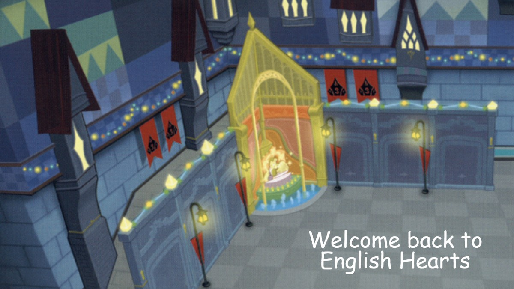
At Hanyang, I worked with elementary English learners whose motivation varied, and with new teachers who brought different levels of experience. I designed engaging lessons and supported teacher onboarding and ongoing practice.
I combined Gagné’s nine events with Classcraft and the Octalysis framework, building connected stories, tasks, workbooks, and optional online quests. For teachers, I kept a shared issue log and turned recurring problems into training and job aids. I used learner surveys and teacher feedback to revise both. The work produced reusable learning materials and a continuing coaching process. Regular student and teacher feedback gave me a way to revise the lessons and the support teachers received.
2015 to 2018Yonsei University Foreign Language Institute
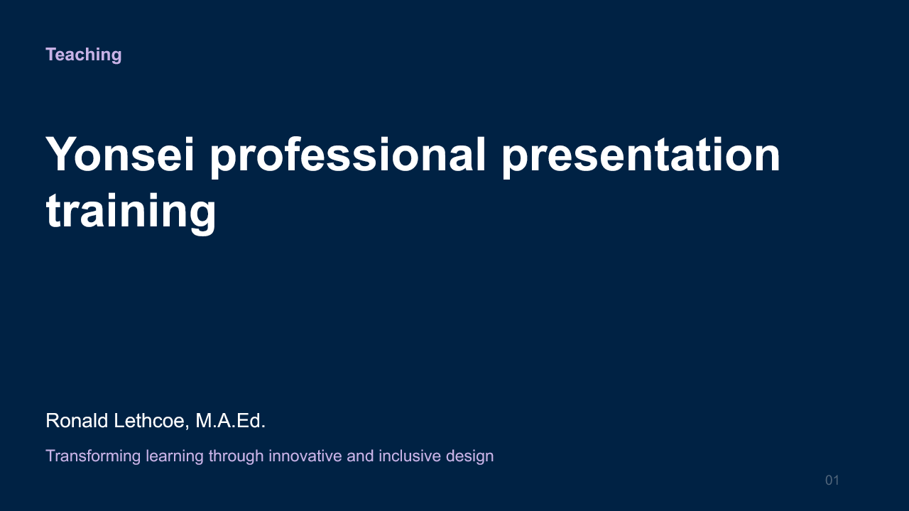
At Yonsei University’s Foreign Language Institute, my audience included managers from Korea’s Financial Supervisory Service. I taught intensive presentation training during the June programs from 2015 to 2018.
I facilitated intensive presentation training for a professional manager audience during the recurring June programs. I returned to deliver the June intensive programs from 2015 to 2018. The recurring delivery is documented; participant assessment and workplace-transfer results are not included in the available record.
2011 to 2017Educating Best and My First Classroom in Korea
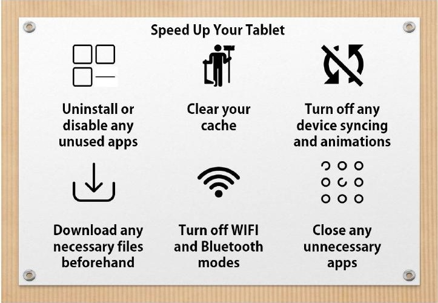
Teachers were frustrated with new tablets and some were avoiding them. The company wanted the tablets used for at least ten minutes in class. I investigated the performance gap and developed support for the teachers.
I surveyed the twenty teachers using the tablets and received eight responses, then tested a tablet myself. I separated actions teachers could take from technical obstacles the company had to resolve. I created a job aid and piloted it with respondents. Three gave feedback, including that the flowchart was confusing, so I simplified the format. The revised job aid was sent with new tablets. Pilot feedback changed the design, and the aid became part of the company’s distribution process.
View the Tablet Job AidI open by relating the topic to the people in the room, follow Gagné's nine events, use TILT for assignments, and gamify wherever it helps.
M.A. in Education, Learning Design and Technology, San Diego State University (4.0 GPA). B.A. in Studio Art, Sacramento State, magna cum laude. CAST Universal Design for Learning certificate.
Creative ExpressionArt, 3D scenes, and work from my studio years
I make art as well as learning materials. I collected this work for my prior-learning portfolio in Digital Entertainment and Design at CPTC.


3D Animation
I made these 3D models and scenes. Here are still renders from that work.


ExtraService, music, events, and a little of my life outside the classroom
I have volunteered, played music on the radio, and helped with campus events. I still like to bring people together.
2014 to 2016Volunteer Work
I served as Membership VP for the Seoul Chapter of the Korea TESOL Association from October 2014 to March 2016.
2007 to 2010Alpha Phi Omega
I joined Alpha Phi Omega, the service fraternity at Sacramento State. I took part from August 2007 to May 2010.
Sacramento StateDJ at KSSU
I was a DJ at KSSU, the Sacramento State student radio station. I hosted a show called When Keeping It Real Goes Wrong.
Sacramento StateUNIQUE Campus Events
I took part in UNIQUE at Sacramento State, where we organized campus events. I still like to organize events today.
© 2026 Ronald Lethcoe. All rights reserved.